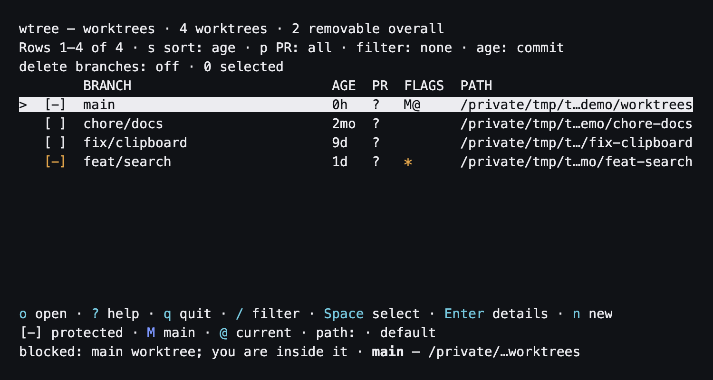

wtree
See your worktrees. Finish the loose ends.
Branches, pull requests, and cleanup in one terminal tool.


Install
brew install filipgutica/tap/wtreeHomebrew installs Node.js. GitHub CLI (gh) is optional for pull request state; fzf is optional for the picker.
Install Homebrew first if the brew command is unavailable. See the README for installation details.
Keep your worktrees in view
List with disk usage
See every worktree in the current repository, oldest first. Size measurement is opt-in.
wtree --sizeBrowse interactively
Filter, select, and inspect worktrees. Press Enter for details or o to print the selected path.
wtree uiPreview cleanup
Inspect a plan for worktrees with merged or closed pull requests. This command does not remove anything.
wtree clean --done --older-than 3mo --dry-runKeep these close
wtree new feat/example- Create a worktree or print the existing path.
wtree go- Pick a worktree or branch and print its path.
wtree path main- Print the path of an existing worktree.
wtree --json- Read the list as machine-readable JSON.
Cleanup asks before removal unless you pass --yes. Main and current worktrees are protected; dirty, unpushed, and locked worktrees are blocked unless forced. PR-filtered cleanup stops when PR state is unavailable.
More tools for local work
All three tools are available from Filip’s Homebrew tap.